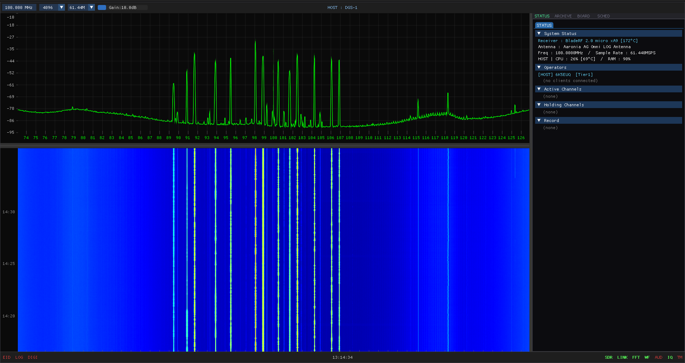
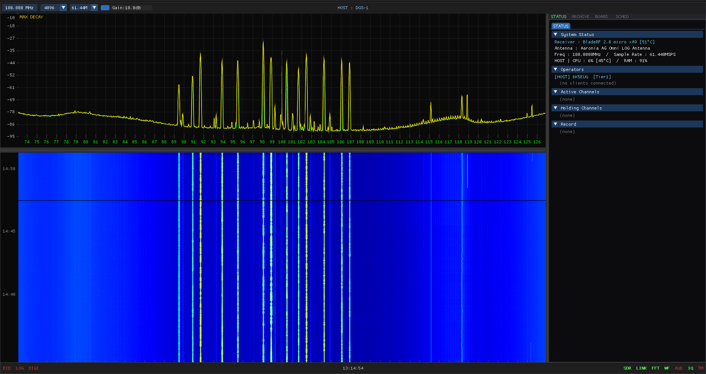
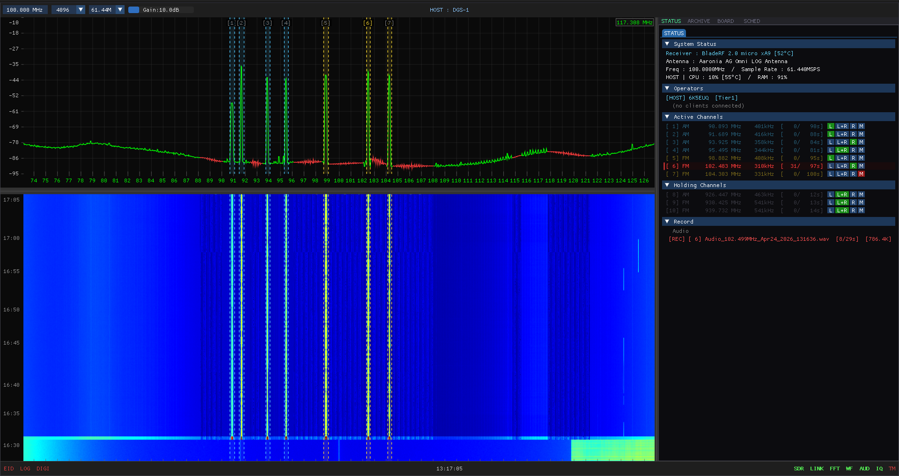
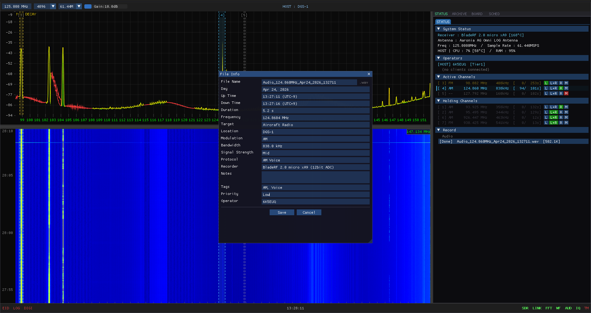
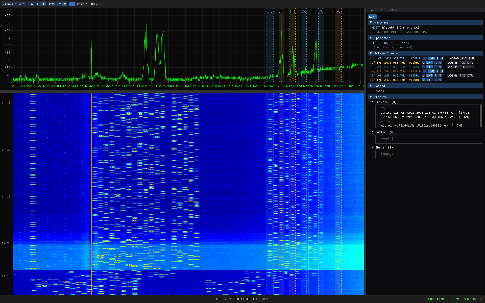

What is BEWE?BEWE란?
A distributed, wideband, persistent SIGINT (Signals Intelligence) platform — forward collection nodes (HOST) fused through a single Central server and observed from analyst workstations (JOIN). Behind Everyone, We hear Everything. This guide walks first-time users through the web interface and the SIGINT capabilities behind it.
분산·광대역·상시 SIGINT(신호정보) 플랫폼입니다. 전방 수집 노드(HOST)를 단일 Central 서버로 융합하고, 분석관 워크스테이션(JOIN)에서 관측합니다. Behind Everyone, We hear Everything. 이 페이지는 웹 인터페이스와 그 배경의 SIGINT 기능을 처음 사용하는 분들을 위해 안내합니다.
Why SIGINT
SIGINT reads adversary capability and intent directly from the electromagnetic spectrum — independent of weather, time of day, or line of sight. Alongside HUMINT (agents) and IMINT (imagery), it is the pillar that delivers real-time warning. On the modern battlefield the first thing to arrive is not the weapon, but the RF signal: GPS jamming, UAS control links, missile pre-launch telemetry. BEWE is the distributed collection and analysis platform for that pillar.
System Architecture
Three tiers operate as one platform. Each HOST owns an SDR receiver and streams live telemetry; Central fuses every site; JOIN analysts observe and command any authorized HOST.
[HOST + SDR] ──┤── Central (port 7700 · permanent archive + emitter DB) ──▶ JOIN / bewe.co.kr
[HOST + SDR] ──┘
HOST — forward collection node; owns the receiver and produces the live waterfall, demodulator channels, IQ captures, and HIST archive. Central — single-port relay holding the permanent archive of all sites and the cross-station emitter database. JOIN — analyst workstation; multiple JOINs may share one HOST. This web page is a JOIN-class read-only view.

HOST collection screen — live spectrum (top), waterfall (bottom), and channel / record status (right)
Core SIGINT Capabilities
How to Navigate
- 1Collection & Analysis
How raw IQ becomes intelligence — spectrum/waterfall, ten-channel COMINT, decode modules, ELINT analyzer.
- 2Globe & Emitter Fix
Click "Discover" on the main page → collection nodes, emitter fixes, and satellites on the 3D globe.
- 3Operations
Click "Operations" in the header → full network status, channels, missions, and archive.
왜 SIGINT인가
SIGINT는 적의 능력과 의도를 전자기 스펙트럼에서 직접 읽어냅니다 — 날씨·주야·가시선에 무관하게. HUMINT(인적 첩보), IMINT(영상 정보)와 함께 실시간 경보를 제공하는 정보 축입니다. 현대 전장에서 가장 먼저 도달하는 것은 무기가 아니라 RF 신호입니다: GPS 재밍, 무인기 통제 링크, 미사일 발사 전 원격측정. BEWE는 그 축을 담당하는 분산 수집·분석 플랫폼입니다.
시스템 구성
세 계층이 하나의 플랫폼으로 동작합니다. 각 HOST는 SDR 수신기를 보유하고 실시간 정보를 송출하며, Central이 모든 기지국을 융합하고, JOIN 분석관이 인가된 HOST를 관측·지휘합니다.
[HOST + SDR] ──┤── Central (포트 7700 · 영구 아카이브 + 에미터 DB) ──▶ JOIN / bewe.co.kr
[HOST + SDR] ──┘
HOST — 전방 수집 노드. 수신기를 보유하고 실시간 워터폴·복조 채널·IQ 캡처·HIST 아카이브를 생성합니다. Central — 모든 기지국의 영구 아카이브와 기지국 간 에미터 데이터베이스를 보유하는 단일 포트 중계 서버. JOIN — 분석관 워크스테이션. 여러 JOIN이 한 HOST를 동시에 공유할 수 있습니다. 이 웹페이지는 JOIN 계층의 읽기 전용 뷰입니다.
HOST 수집 화면 — 실시간 스펙트럼(상)·워터폴(하), 우측에 채널·녹음 상태
핵심 SIGINT 기능
탐색 방법
- 1수집·분석
원시 IQ가 정보로 바뀌는 과정 — 스펙트럼·워터폴, 10채널 COMINT, 디코드 모듈, ELINT 분석기
- 2지구본·표적 측위
메인 페이지 "Discover" 클릭 → 수집 노드·표적 측위·위성을 3D 지구본에서 확인
- 3Operations
상단 "Operations" 클릭 → 전체 네트워크 상태·채널·임무·아카이브
Collection & Analysis수집·분석
What a HOST actually collects — and how raw IQ becomes intelligence. Live spectrum and waterfall, ten-channel COMINT with a Holding List, licensed protocol-decode modules, and a nine-domain ELINT analyzer.
HOST가 실제로 수집하는 것 — 그리고 원시 IQ가 정보로 바뀌는 과정. 실시간 스펙트럼·워터폴, 10채널 COMINT와 Holding List, 프로토콜 디코드 모듈, 9개 도메인 ELINT 분석기를 다룹니다.
The Collection Screen
The HOST screen is split into two: an instantaneous spectrum (top) and a waterfall (bottom — frequency on the X axis, time scrolling down, brightness = signal strength). A max-hold trace latches peak energy so intermittent and burst emissions are not missed between sweeps. The right panel shows system status (SDR, sample rate, center frequency), connected operators, active channels, the Holding List, and recording state.

Spectrum with max-hold (yellow) — latches peaks so burst and frequency-hopping emissions are caught between sweeps
COMINT — Ten Channels & the Holding List
Up to ten demodulators run at once — AM · FM · USB · LSB · CW — each working a slice of the received band. Frequencies of interest are parked in the Holding List (Waiting Channels) so a target stays tracked even when the adversary moves frequency. A 60-second rolling IQ buffer enables post-event replay of frequency-hopping and burst transmissions.

Multi-channel demodulation (colored markers) with the Holding List populated — Active Channels and Waiting Channels on the right
Tactical Band Plan
Frequency allocations — DPRK tactical bands, UAS control bands, satellite downlink bands — are defined by category and color (label, start, end, category, description) and propagated to every JOIN analyst display, so all sites read the same picture.

Band Info editor — a tactical allocation defined by category and color, synced to all analysts
Protocol Decode Modules (DEMOD)
Beyond raw collection, BEWE decodes the content of structured digital transmissions. Modules are licensed per subscription and activate without redeployment. From the DEMOD panel an analyst applies a decoder to any channel filter on any station; the owning HOST demodulates and decoded records fan out through Central to every subscribed JOIN.
| Module | Signal | Decoded Content |
|---|---|---|
| ACARS | VHF aircraft datalink (~131 MHz) | Registration · flight · type · airline · country · message label / text · uplink/downlink |
| AIS | Maritime VHF (161.975 / 162.025 MHz) | Vessel MMSI · position · course · type · name — rendered on a 2D map overlay |
| WiFi | 802.11 beacons, 2.4 / 5 GHz | SSID · channel · security (Open/WPA/WPA2) · PHY (11b/g/n/ac/ax) · BSSID — from 6 Mbps OFDM and 1 Mbps DSSS |
ELINT — Radar & Missile Signal Analysis
Radar, missile-seeker, and telemetry signals are analyzed across nine domains: Spectrogram · Freq · Amp · Phase · I/Q · Constellation · Audio · M-th Power · Bits. The analyzer auto-measures PRI · PRF · pulse duration · baud and modulation type, and auto-detects the preamble.

ELINT analyzer (Freq domain) — PRI / PRF / pulse duration / baud auto-measured; preamble region auto-detected

ELINT analyzer (Bits domain) — demodulated bit stream with AIS / ADS-B / UAV pattern matching and BIN / HEX / BITMAP views
Direction Finding (DF)
When the same signal is received simultaneously at multiple active sites, each projects a line of bearing toward the emitter; intersecting LOBs localize the source in real time on the 3D globe, with an error ellipse.
GPS Jamming Detection
A single receive site cannot bound a jamming footprint — only distributed nodes can triangulate. BEWE continuously monitors wideband GNSS (GPS L1/L2, GLONASS, BeiDou, Galileo), estimates the jamming source by TDOA, auto-preserves the event IQ for later characterization, and maps per-node signal strength on the globe.
Persistent Archive & Emitter Database
Every capture is mission-coded (e.g. A03 = January 3) and consolidated into the Central archive. Frequency and identifying tags (MMSI, callsign, unit IDs) drive automatic matching; first-seen / last-seen timestamps, contributing stations, and analyst notes consolidate onto one record. Unidentified signals queue for analyst adjudication.

Signal metadata record — mission code, frequency, modulation, tags, priority (the emitter database)
수집 화면
HOST 화면은 둘로 나뉩니다 — 순간 스펙트럼(상단)과 워터폴(하단: X축 주파수, 아래로 흐르는 시간, 밝기 = 신호 세기). Max-hold 트레이스가 피크 에너지를 붙잡아, 스윕 사이의 간헐·버스트 신호를 놓치지 않습니다. 우측 패널은 시스템 상태(SDR, 샘플레이트, 중심주파수), 접속 운용자, 활성 채널, Holding List, 녹음 상태를 표시합니다.
Max-hold(노란색) 스펙트럼 — 피크를 붙잡아 버스트·주파수도약 신호를 스윕 사이에도 포착
COMINT — 10채널과 Holding List
최대 10개 복조기가 동시 동작합니다 — AM · FM · USB · LSB · CW — 각자 수신 대역의 일부를 담당합니다. 관심 주파수는 Holding List(대기 채널)에 보관되어, 적이 주파수를 옮겨도 표적 추적이 유지됩니다. 60초 롤링 IQ 버퍼로 주파수도약·버스트 송신을 사후 재생·분석할 수 있습니다.
다채널 동시 복조(컬러 마커) + Holding List — 우측에 활성 채널(Active)·대기 채널(Waiting)
전술 밴드플랜
주파수 할당 — DPRK 전술 대역, 무인기 통제 대역, 위성 다운링크 대역 — 을 카테고리·색상(라벨, 시작, 끝, 카테고리, 설명)으로 정의하고, 모든 JOIN 분석관 화면에 전파해 전 기지국이 동일한 그림을 공유합니다.
Band Info 편집기 — 카테고리·색상으로 정의한 전술 할당, 전 분석관에 동기화
프로토콜 디코드 모듈 (DEMOD)
원시 수집을 넘어, BEWE는 구조화된 디지털 송신의 내용을 디코드합니다. 모듈은 구독 단위로 라이선스되며 재배포 없이 활성화됩니다. DEMOD 패널에서 분석관이 어느 기지국의 어느 채널 필터에든 디코더를 적용하면, 소유 HOST가 복조하고 디코드 레코드가 Central을 거쳐 구독 중인 모든 JOIN으로 확산됩니다.
| 모듈 | 신호 | 디코드 내용 |
|---|---|---|
| ACARS | VHF 항공 데이터링크 (~131 MHz) | 등록기호 · 편명 · 기종 · 항공사 · 국가 · 메시지 라벨/본문 · 업/다운링크 |
| AIS | 해상 VHF (161.975 / 162.025 MHz) | 선박 MMSI · 위치 · 침로 · 종류 · 선명 — 2D 지도 오버레이 |
| WiFi | 802.11 비컨, 2.4 / 5 GHz | SSID · 채널 · 보안(Open/WPA/WPA2) · PHY(11b/g/n/ac/ax) · BSSID — 6 Mbps OFDM·1 Mbps DSSS |
ELINT — 레이더·미사일 신호 분석
레이더 · 미사일 시커 · 텔레메트리 신호를 9개 도메인으로 분석합니다: Spectrogram · Freq · Amp · Phase · I/Q · Constellation · Audio · M-th Power · Bits. 분석기는 PRI · PRF · 펄스폭 · Baud와 변조 방식을 자동 측정하고 프리앰블을 자동 검출합니다.
ELINT 분석기(Freq 도메인) — PRI / PRF / 펄스폭 / Baud 자동 측정, 프리앰블 자동 검출
ELINT 분석기(Bits 도메인) — 복조 비트스트림, AIS / ADS-B / UAV 패턴 인식, BIN / HEX / BITMAP 표시
방향 탐지 (DF)
동일 신호가 여러 활성 기지국에서 동시에 수신되면, 각 기지국이 표적을 향한 방위선(LOB)을 투영하고, 교차하는 LOB가 3D 지구본 위에 신호원을 오차 타원과 함께 실시간 측위합니다.
GPS 재밍 탐지
단일 수신소로는 재밍 영향권을 한정할 수 없습니다 — 분산 노드만이 삼각측량할 수 있습니다. BEWE는 광대역 GNSS(GPS L1/L2, GLONASS, BeiDou, Galileo)를 상시 감시하고, TDOA로 재밍원을 추정하며, 사건 IQ를 자동 보존하고, 노드별 신호 세기를 지구본에 표시합니다.
상시 아카이브 & 에미터 DB
모든 캡처는 임무코드(예: A03 = 1월 3일)로 분류되어 Central 아카이브에 통합됩니다. 주파수와 식별 태그(MMSI, 콜사인, 부대 식별자)로 자동 매칭하고, 최초/최종 관측 시각·기여 기지국·분석관 노트를 하나의 레코드로 통합합니다. 미식별 신호는 분석관 판정 대기열로 들어갑니다.
신호 메타데이터 레코드 — 임무코드·주파수·변조·태그·우선순위 (에미터 데이터베이스)
Globe & Emitter Fix지구본·표적 측위
The interactive 3D globe shows the real-time positions of collection nodes, satellites, and direction-finding emitter fixes — the common operating picture of the network.
인터랙티브 3D 지구본은 수집 노드·위성·방향탐지 표적 측위 위치를 실시간으로 표시합니다 — 네트워크의 공통 작전 상황도입니다.
Entering the Globe
- 1Open the main page
Go to bewe.co.kr and click "Discover" (top right) — or click "DISCOVER THE GLOBE" at the bottom of the page.
- 2The globe appears
Earth texture and collection-node markers (green dots) are shown on a dark background.
Basic Controls
| Action | Input | Effect |
|---|---|---|
| Rotate | Drag | Spin the globe to any region |
| Zoom | Scroll wheel | Zoom in / zoom out |
| Touch rotate | One-finger drag | Spin the globe |
| Touch zoom | Two-finger pinch | Zoom in / zoom out |
Screen Elements
| Element | Description |
|---|---|
| Green dot (glowing) | Online collection node (HOST) — currently receiving |
| Gray dot | Offline node — no connection |
| Red / yellow / blue-white dots | Satellites (when SAT mode is on; color = altitude band) |
| Emitter fix + error ellipse | Direction-finding source location from intersecting multi-site bearings (LOBs) |
| Jamming footprint | Per-node GNSS signal-strength heat when a GPS jamming event is detected |
Going Back
- →Back button (top left)
Click the ← button to return to the main landing page.
진입 방법
-
1메인 페이지 열기
bewe.co.kr 접속 후 우측 상단 "Discover" 버튼 클릭 — 또는 페이지 하단 "DISCOVER THE GLOBE" 버튼 클릭
-
2지구본이 나타납니다
어두운 배경에 지구 텍스처와 수집 노드 마커(녹색 점)가 표시됩니다.
기본 조작
| 동작 | 마우스/터치 | 효과 |
|---|---|---|
| 회전 | 드래그 | 지구 회전 (원하는 지역으로 이동) |
| 줌 인/아웃 | 스크롤 휠 | 가까이/멀리 보기 |
| 터치 회전 | 한 손가락 드래그 | 지구 회전 |
| 터치 줌 | 두 손가락 핀치 | 확대/축소 |
화면 요소
| 요소 | 설명 |
|---|---|
| 녹색 점 (빛나는) | 온라인 수집 노드(HOST) — 현재 수신 중 |
| 회색 점 | 오프라인 노드 — 연결 없음 |
| 빨강/노랑/청백 작은 점 | 위성 (SAT 모드 켜져 있을 때, 고도별 색상) |
| 표적 측위 + 오차 타원 | 다중 기지국 방위선(LOB) 교차로 산출한 방향탐지 신호원 위치 |
| 재밍 영향권 | GPS 재밍 탐지 시 노드별 GNSS 신호 세기 히트맵 |
뒤로 가기
-
→좌측 상단 뒤로가기 버튼
← 버튼을 클릭하면 메인 랜딩 페이지로 돌아갑니다.
Station Info기지국 정보
Click a node marker on the globe to view real-time status for that collection node (HOST) — frequency, channels, operators, and recording state.
지구본의 노드 마커를 클릭하면 해당 수집 노드(HOST)의 실시간 상태 — 주파수·채널·운용자·녹음 상태 — 를 확인할 수 있습니다.
Opening the Popup
- 1Hover — see name
Hover over a green dot on the globe to see the station name tooltip.
- 2Click — details popup
Click to open the popup showing frequency, channels, recording status, and more.
- 3Close popup
Click the ✕ button (top right), or click anywhere outside the popup.
Popup Field Reference

BE_WE HOST screen — the live signals this node is collecting (spectrum, active channels, archive)
| Field | Example | Description |
|---|---|---|
| Name | DGS-4 (Suwon) | Station identifier and display name |
| Coordinates | 37.25°N 127.05°E | GPS location |
| Tier | 2 | Equipment grade. Higher = higher-performance / wider bandwidth |
| Users | 3 | Operators currently logged in to this station |
| Freq | 433.920 MHz | Receiver center frequency — midpoint of the receive band |
| SR | 2.00 MS/s | Sample rate. Effective bandwidth ≈ SR/2 (here ~1 MHz) |
| Ch | 3 | Number of active demodulation channels |
| REC | — | Currently recording raw IQ signal to disk |
팝업 열기
-
1호버 — 이름 확인
지구본의 기지국 점(녹색)에 마우스를 올리면 기지국 이름이 툴팁으로 나타납니다.
-
2클릭 — 상세 팝업
클릭하면 팝업 창이 열려 주파수, 채널, 녹음 상태 등 자세한 정보를 표시합니다.
-
3팝업 닫기
우측 상단 ✕ 버튼 클릭, 또는 팝업 바깥 빈 영역 클릭
팝업 필드 설명
BE_WE HOST 화면 — 이 노드가 수집 중인 실시간 신호 (스펙트럼·활성 채널·아카이브)
| 항목 | 예시 | 설명 |
|---|---|---|
| Name | DGS-4 (Suwon) | 기지국 식별자 및 위치 표시명 |
| Coordinates | 37.25°N 127.05°E | 기지국 GPS 좌표 |
| Tier | 2 | 수신 품질 등급. 값이 높을수록 고성능 장비 |
| Users | 3 | 현재 이 기지국에 접속 중인 운용자 수 |
| Freq | 433.920 MHz | 수신기 중심 주파수. 수신 대역의 중심점 |
| SR | 2.00 MS/s | 샘플레이트. 유효 수신 대역폭 ≈ SR / 2 (여기선 약 1 MHz) |
| Ch | 3 | 현재 활성화된 복조 채널 수 |
| REC | — | 표시될 때: 현재 IQ 원시 신호를 디스크에 녹음 중 |
Satellite Downlink Surveillance위성 다운링크 감시
Adversary ISR satellite passes are surveilled from TLE (Two-Line Element) orbital data and displayed on the 3D globe. Every overhead pass of a Satellite of Interest (SOI) can be auto-captured for downlink analysis.
TLE(Two-Line Element) 궤도 데이터로 적성 ISR 위성의 통과를 감시하고 3D 지구본에 표시합니다. 관심 위성(SOI)의 모든 머리 위 통과는 다운링크 분석을 위해 자동 캡처할 수 있습니다.
Selecting SAT Mode
- 1Find the SAT button (bottom right of globe view)
Only visible while in globe view. Three modes available: OFF / VISUAL / STARLINK.
- 2Select a mode
OFF — hide all satellites.
VISUAL — ~1,000 naked-eye-visible satellites (ISS, weather satellites, etc.).
STARLINK — SpaceX Starlink constellation (~6,000 satellites).
Satellite Color Meanings
Color indicates orbital altitude band.
| Color | Orbit | Altitude | Examples |
|---|---|---|---|
| Red | LEO Low Earth | < 2,000 km | ISS, earth observation, reconnaissance |
| Yellow | MEO Medium Earth | 2,000–35,000 km | GPS, GLONASS, Galileo, BeiDou |
| Blue-white | GEO Geostationary | ~35,786 km | Broadcast and communications satellites |
Viewing Orbital Paths
- 1Click a satellite
Click any colored dot to display that satellite's complete orbital path around the globe.
- 2Hide the path
Click the same satellite again, or click empty space to clear the orbital path.
SAT 모드 선택
-
1지구본 화면 우하단 SAT 버튼 확인
지구본 뷰에서만 나타납니다. OFF / VISUAL / STARLINK 세 가지 모드가 있습니다.
-
2모드 선택
OFF — 위성 표시 숨김
VISUAL — 육안 식별 가능한 위성 ~1,000개 (ISS, 기상위성, 각국 군사위성 등)
STARLINK — SpaceX Starlink 군집 ~6,000개
위성 색상 의미
위성의 색상은 궤도 고도 대역에 따라 구분됩니다.
| 색상 | 궤도 | 고도 범위 | 대표 위성 |
|---|---|---|---|
| 빨강 | LEO 저궤도 | < 2,000 km | ISS, 지구관측위성, 정찰위성 |
| 노랑 | MEO 중궤도 | 2,000 – 35,000 km | GPS, GLONASS, Galileo, BeiDou |
| 청백 | GEO 정지궤도 | ~35,786 km | 방송위성, 통신위성, 기상위성 |
궤도 경로 보기
-
1위성 클릭
지구본 위의 작은 컬러 점(위성)을 클릭하면 해당 위성의 전체 궤도 경로가 지구 주위에 선으로 표시됩니다.
-
2경로 숨기기
같은 위성을 다시 클릭하거나, 빈 공간을 클릭하면 궤도 경로가 사라집니다.
Monitoring모니터링 페이지
The Operations page is a real-time dashboard for the entire network. One click on a station card reveals channels, analysts, scheduled missions, and the recording archive.
Operations 페이지는 전체 네트워크의 실시간 상태를 보여주는 대시보드입니다. 기지국 카드 클릭 한 번으로 채널·분석관·예약 임무·녹음 아카이브를 모두 확인할 수 있습니다.
Getting There
- 1Click "Operations" in the nav
Available from the main page, globe view, or this guide's top nav → /status.html
- 2Check CENTRAL ONLINE
The green pill (● CENTRAL ONLINE, top right) confirms the relay server is connected. Red = no response.
KPI Summary Cards
Four cards at the top summarize the entire network. Auto-refreshes every 3 seconds.
| Card | Meaning | Status Color |
|---|---|---|
| Sites Active | Online / total station count | All = green · partial = yellow · none = red |
| Analysts On Duty | Total operators logged in across all stations | ≥1 = green · 0 = gray |
| Active Channels | Total demodulation channels across all stations | ≥1 = green |
| Mission Recording | Stations with HIST IQ archive active | ≥1 = green · 0 = gray (Standby) |
Station Card — Collapsed
Station list: online first, offline faded at the bottom.
| Element | Description |
|---|---|
| ● LED green | Online — receiving heartbeat from relay |
| ● LED red | Offline — no response; card is faded |
| ● REC | HIST IQ archive recording in progress (blinking) |
| Tier N | Equipment grade. Higher = better performance / wider bandwidth |
| operated by… | BE_WE operator ID currently logged in to this station |
| LIVE / Xs ago | LIVE = currently responding. "14m ago" = time since last response (browser-updated per second) |
| ▾ arrow | Click to expand the detail panel |
Station Card — Expanded
- 1Click the card header
Click anywhere on the station name area to expand. Click again to collapse.
- 2Detail data auto-loads
Channels, analysts, and scheduled missions refresh every 5 seconds while expanded.
Active Channels
Each row is one demodulation channel: number · mode · center frequency · bandwidth · recording status.
| Element | Description |
|---|---|
| 01 / 02 … | Channel number (index in BE_WE app, starts at 1) |
| Mode badge | AM · FM · USB · LSB · CW · ADS-B · AIS (see color table below) |
| Frequency | Center frequency — midpoint between start and end |
| Bandwidth | Channel bandwidth. Center ± (BW/2) |
| IQ REC | Raw IQ written to disk (maximum data, full post-processing possible) |
| AUDIO REC | Demodulated audio only (small file, for listening) |
| standby | Demodulating but not recording |
Demodulation Mode Colors
| Mode | Description | Typical Use | Typical Frequency |
|---|---|---|---|
| AM | Amplitude modulation | Air traffic VHF, AM broadcast | 118–137 MHz, 526–1605 kHz |
| FM | Frequency modulation | FM broadcast, amateur, PMR | 87.5–108 MHz, 144–146 MHz |
| USB / LSB | Single sideband | HF shortwave, maritime | 2–30 MHz |
| CW | Morse code | Military HF beacons, amateur | HF band |
| AIS | Ship auto-identification | Vessel position / ID | 161.975 / 162.025 MHz |
| ADS-B | Aircraft auto-surveillance | Aircraft position / altitude / speed | 1090 MHz |
| MAGIC | BE_WE proprietary | Internal data link and control | Configurable |
Connected Analysts
Currently logged-in operators for this station. Each pill shows Tier level and user ID.
Scheduled Missions
Automatic recording schedules configured in the BE_WE application. Start and stop at the specified time.
| Status | Meaning |
|---|---|
| IDLE | Waiting — scheduled time not yet reached |
| ARMED | Ready — will transition to RECORDING shortly |
| RECORDING | Active now — recording in progress |
| DONE | Complete — file saved to HIST archive |
Mission Archive — HIST Recording
When a station card shows the REC badge, a HIST IQ archive is in progress.
| Field | Description |
|---|---|
| Started | Recording start time (local HH:MM) |
| Elapsed | Time since recording started |
| Center Freq | Center frequency of the IQ stream being archived |
| Bandwidth | Capture bandwidth (= sample rate). All signals within this range are saved |

BE_WE HIST long-term waterfall archive — scroll back through time to review past signals
Operator Note
A text input area inside each expanded station card. Log current activity, anomalies, or handover notes. Server-saved — visible to all connected operators.
- →Type and press Enter (Shift+Enter for new line)
Saved to server immediately. Other analysts who open the same station card see the same note.
Radiosonde Tracking
Below the station list, the Radiosonde Tracking section displays weather balloon signals detected by stations in range.
| Field | Description |
|---|---|
| Model | Sonde transmitter type (RS41, RS92, etc.) |
| Coordinates | Current GPS position |
| Altitude ↑ | Current altitude (m). ↑ = ascending · ↓ = descending |
| Frequency | Sonde transmit frequency (400–406 MHz band) |
| Receiving Station | Station ID that captured this sonde |
접근 방법
-
1상단 네비게이션 "Operations" 클릭
메인 페이지, 지구본 뷰, 또는 이 가이드 우상단 nav에서 클릭 → /status.html
-
2CENTRAL ONLINE 확인
우상단 초록 알약(● CENTRAL ONLINE)이 표시되면 중계 서버와 정상 연결된 상태입니다. 빨간색이면 서버 응답 없음.
KPI 통계 카드
페이지 상단 4개 카드가 전체 네트워크 현황을 요약합니다. 3초마다 자동 갱신됩니다.
| 카드 | 의미 | 색상 조건 |
|---|---|---|
| Sites Active | 온라인 기지국 수 / 전체 기지국 수 | 전체=초록, 일부=노랑, 전부 오프=빨강 |
| Analysts On Duty | 현재 BE_WE 앱 접속 중인 운용자 합계 | 1명 이상=초록, 0명=회색 |
| Active Channels | 전체 기지국의 활성 복조 채널 합계 | 1개 이상=초록 |
| Mission Recording | IQ 아카이브(HIST) 녹음 중인 기지국 수 | 1개 이상=초록, 0=회색(Standby) |
기지국 카드 — 접힌 상태
기지국 목록은 온라인이 위, 오프라인이 아래(흐리게)로 자동 정렬됩니다.
| 요소 | 설명 |
|---|---|
| ● LED (초록) | 온라인 — 중계 서버에서 응답 수신 중 |
| ● LED (빨강) | 오프라인 — 응답 없음, 카드 흐리게 표시 |
| ● REC | HIST IQ 아카이브 녹음 진행 중 (깜빡임) |
| Tier N | 수신 장비 등급. 숫자가 높을수록 고성능·고대역폭 |
| operated by … | 현재 이 기지국에 로그인된 BE_WE 운용자 ID |
| LIVE / Xs ago | LIVE = 현재 응답 중. "14m ago" = 마지막 수신 후 경과 시간 (브라우저에서 매초 갱신) |
| ▾ 화살표 | 클릭하면 상세 패널 펼침 |
기지국 카드 — 펼친 상태
-
1카드 헤더 클릭
기지국 이름 영역을 클릭하면 상세 패널이 아래로 펼쳐집니다. 다시 클릭하면 접힙니다.
-
2펼쳐진 상태에서 세부 데이터 자동 로드
5초마다 채널·분석관·예약 임무 정보가 자동 갱신됩니다.
채널 목록 (Active Channels)
각 행이 하나의 복조 채널입니다. 채널 번호 · 복조 방식 · 중심주파수 · 대역폭 · 녹음 상태가 표시됩니다.
| 요소 | 설명 |
|---|---|
| 01 / 02 … | 채널 번호 (BE_WE 앱 내 인덱스, 1부터 시작) |
| 복조 방식 뱃지 | AM · FM · USB · LSB · CW · ADS-B · AIS (아래 색상표 참고) |
| 주파수 (MHz) | 채널 중심 주파수. 스타트~엔드 주파수의 중간값 |
| 대역폭 (kHz) | 채널 점유 대역. 중심주파수 ± (BW/2) |
| IQ REC | IQ 원시 신호를 디스크에 기록 중 (최대 데이터, 후처리 가능) |
| AUDIO REC | 복조된 오디오만 기록 중 (용량 적음, 청취용) |
| standby | 복조 중이지만 녹음은 하지 않는 상태 |
복조 방식 색상
| 뱃지 | 방식 | 대표 용도 | 전형 주파수 |
|---|---|---|---|
| AM | 진폭 변조 | 항공 VHF 관제, AM 방송 | 118–137 MHz, 526–1605 kHz |
| FM | 주파수 변조 | FM 방송, 아마추어 교신, 업무용 무선 | 87.5–108 MHz, 144–146 MHz |
| USB / LSB | 단측파대 | HF 단파 교신, 해상 무선 | 2–30 MHz |
| CW | 모스 부호 | 군용 HF 비컨, 아마추어 | HF 대역 |
| AIS | 선박 자동 식별 | 선박 위치·ID 자동 수신 | 161.975 / 162.025 MHz |
| ADS-B | 항공기 자동 감시 | 항공기 위치·고도·속도 자동 수신 | 1090 MHz |
| MAGIC | BE_WE 독자 프로토콜 | 내부 데이터 링크 및 제어 | 설정에 따름 |
접속 분석관 (Connected Analysts)
현재 이 기지국에 BE_WE 앱으로 로그인된 운용자 목록입니다. 각 알약에 Tier와 사용자 ID가 표시됩니다.
예약 임무 (Scheduled Missions)
운용자가 BE_WE 앱에서 설정한 자동 녹음 스케줄입니다. 지정 시간에 자동으로 녹음을 시작하고 종료합니다.
| 상태 | 의미 |
|---|---|
| IDLE | 아직 시작 시간이 되지 않음. 대기 중 |
| ARMED | 시작 직전 준비 완료 상태. 곧 RECORDING으로 전환됨 |
| RECORDING | 현재 녹음 진행 중 |
| DONE | 녹음 완료. 파일이 HIST 아카이브에 저장됨 |
임무 아카이브 — HIST 녹음
기지국 카드에 REC 뱃지가 표시되면 현재 HIST(History) IQ 아카이브가 진행 중입니다. 이 섹션에서 녹음 시작 시간과 경과 시간, 수신 주파수·대역폭을 확인합니다.
| 항목 | 설명 |
|---|---|
| Started | HIST 녹음 시작 시각 (로컬 시간 HH:MM) |
| Elapsed | 녹음 시작 후 경과 시간 |
| Center Freq | 녹음 중인 IQ 스트림의 중심 주파수 |
| Bandwidth | 캡처 대역폭 (= 샘플레이트). 이 범위 안의 모든 신호가 저장됨 |
BE_WE HIST 장기 워터폴 아카이브 — 시간축으로 스크롤하며 과거 신호 열람
운용자 노트 (Operator Note)
펼쳐진 기지국 카드 안에 텍스트 입력 영역이 있습니다. 현재 상황, 특이사항, 인수인계 내용 등을 자유롭게 기록할 수 있습니다. 서버에 저장되어 다른 접속자도 동일한 노트를 볼 수 있습니다.
-
→입력 후 Enter (또는 Shift+Enter로 줄바꿈)
서버에 즉시 저장됩니다. 다른 분석관이 같은 기지국 카드를 열면 동일한 노트가 보입니다.
라디오존데 추적 (Radiosonde Tracking)
기지국 목록 아래 Radiosonde Tracking 섹션이 있습니다. 기상청 등에서 띄우는 라디오존데(기상 관측 풍선)가 수신 범위 안에 있을 때 자동으로 추적됩니다.
| 필드 | 설명 |
|---|---|
| 모델명 | 존데 송신기 타입 (RS41, RS92 등) |
| 좌표 | 현재 GPS 위치 |
| 고도 ↑ | 현재 고도 (m). 상승 중이면 ↑, 하강이면 ↓ |
| 주파수 | 존데 송신 주파수 (400–406 MHz 대역) |
| 수신 기지국 | 이 존데를 포착한 기지국 ID |